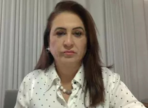

Gestão de Araújo teve preconceito com Venezuela e China, diz Katia Abreu
Em entrevista exclusiva à CNN nesta terça-feira (18), a senadora Kátia Abreu (PP-TO) reiterou as críticas à gestão de Ernesto Araújo, feitas durante a sessão da CPI da Pandemia que ouviu o ex-ministro das Relações Exteriores. Para a senadora, Araújo demonstrou "preconceito" com países como Venezuela e China, com os quais, avalia, deveria ter estreitado laços para o enfrentamento da pandemia da Covid-19. Ela cita especificamente a questão da falta de abastecimento de oxigênio em Manaus no início do ano, quando o governo venezuelano ofereceu ajuda ao Brasil. À CPI, o ex-ministro confirmou que não fez nenhum gesto de reconhecimento ao país vizinho pelo apoio. "Isso é preconceito contra a Venezuela. Imagina se eu fosse diferenciar o oxigênio da Venezuela, da Bolívia ou do Peru", criticou Kátia Abreu à CNN. A senadora preside a Comissão de Relações Exteriores do Senado, mas não é titular da CPI da Pandemia. "Queremos dar uma resposta às pessoas que perderam um familiar", afirmou. Para embasar suas críticas ao ex-ministro, a senadora citou também a farmacêutica chinesa Sinopharm, também produtora de vacina contra a Covid-19. Ela questiona o porquê de o Brasil não ter negociado com a Sinopharm e reforçou que a única parceria com uma empresa chinesa do ramo foi fechada com a Sinovac, da Coronavac, pelo Governo de São Paulo. "Preconceito com a China", criticou. Para Kátia Abreu, o Brasil não deve se propor a avaliar os governos de outros países, atribuindo a rejeição às vacinas do país asiático pelo fato de este adotar o regime comunista.
- Guilherme Venaglia e Thiago Felix
- 18/05/2021